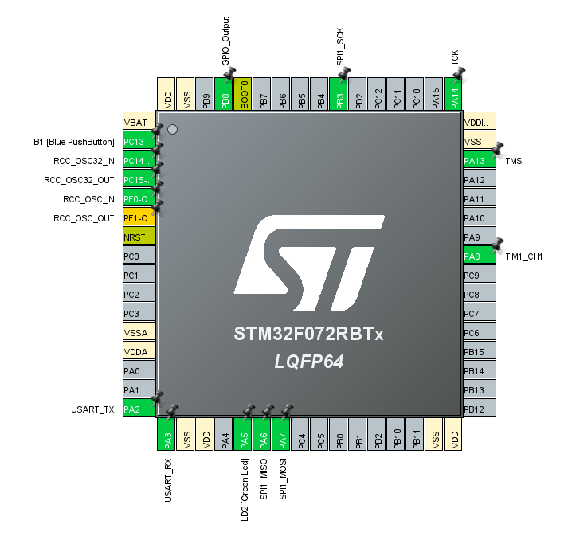

Firmware – Waterloo Aerial Robotics Group
Member of the WARG design team on the firmware subteam. Responsible for various tasks such as SPI communication between hardware. Past projects include creating a program in C using STM32Cube to convert potentiometer values to a PWM signal to control a motor using SPI communication. Check it out on my github here , pin configuration using STM32Cube below.
